CS180 · Project 3
Part A explores sampling, guidance, and image editing with the pretrained PixNerd-XXL-P16-T2I text-to-image flow model. Part B covers the second half of the project.
Throughout, I use the linear (optimal-transport) flow-matching convention \(x_t = (1-t)\,\epsilon + t\,x_1\) with \(\epsilon \sim \mathcal N(0, I)\): \(t = 0\) is pure noise and \(t = 1\) is a clean image. The model predicts the velocity \(v_\theta(x_t, t, c) \approx x_1 - \epsilon\). All runs use seed 180, Euler step size \(h = 0.02\), and 512×512 images in \([-1, 1]\).
A training input is a point on the straight line between a noise sample and a clean image. This scales the image down as well as adding noise. I sampled one noise tensor \(\epsilon\) and reused it for every \(t\), so all three noisy images lie on the same path. Both endpoints check out exactly: interpolate(image, ε, 0) == ε and interpolate(image, ε, 1) == image.
def interpolate(image, noise, t):
return (1 - t) * noise + t * image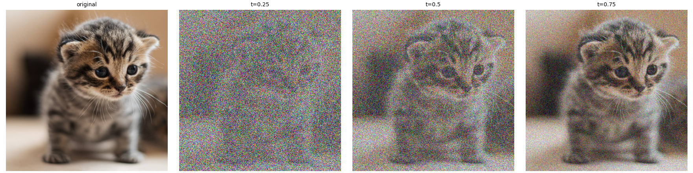
At \(t = 0.25\) the kitten is a faint outline under heavy static; by \(t = 0.75\) it is clearly visible with light grain.
As a baseline that uses no learned model, I first undo the image scaling by dividing by \(t\), then apply a Gaussian blur: \(\hat x_1 = G_\sigma * (x_t / t)\). For each noise level I tried \(\sigma \in \{1, 2, 4, 8, 16\}\) and kept the one with the lowest MSE against the original.
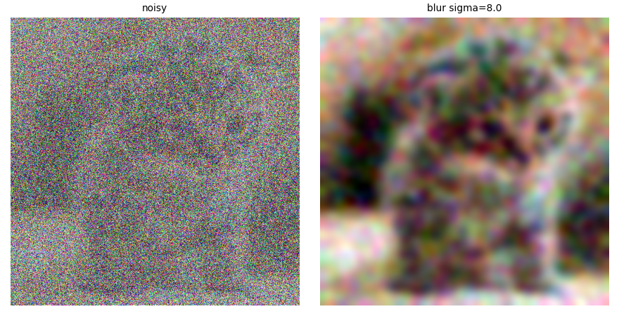
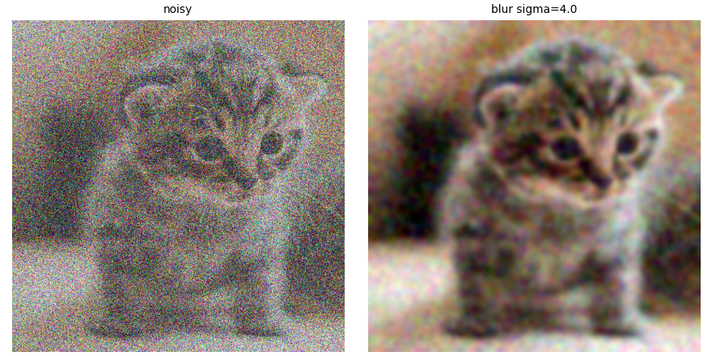
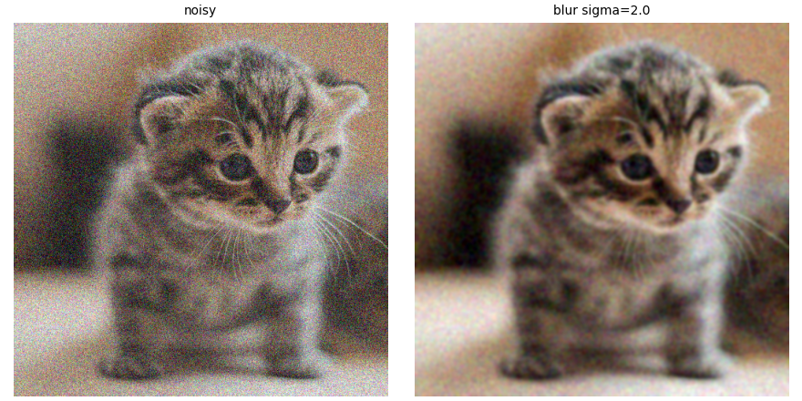
The best blur gets weaker as the input gets cleaner (\(\sigma\) = 8, 4, 2). Blur only trades noise for detail: at \(t = 0.25\), \(\sigma = 8\) still leaves large colored blotches, because dividing by \(t\) amplifies the noise 3× and nearby pixels don't average it away.
The model predicts a velocity, not noise, so a single prediction can be extrapolated over the remaining time \(1 - t\) to estimate the clean endpoint, using the prompt "a high quality photo":
\[\hat x_1 = x_t + (1 - t)\, v_\theta(x_t, t, c)\]def one_step_denoise(x, t, condition, predict_velocity):
return x + (1 - t) * predict_velocity(x, t, condition)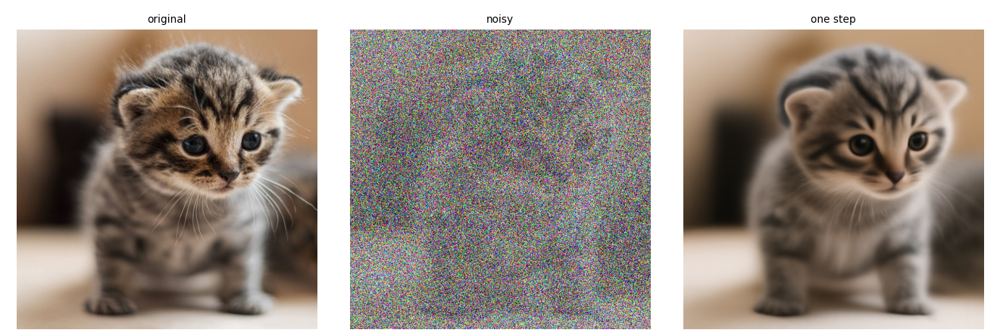
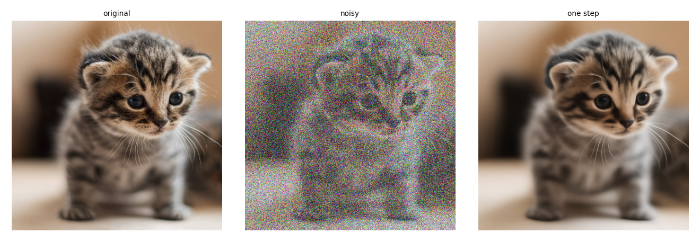
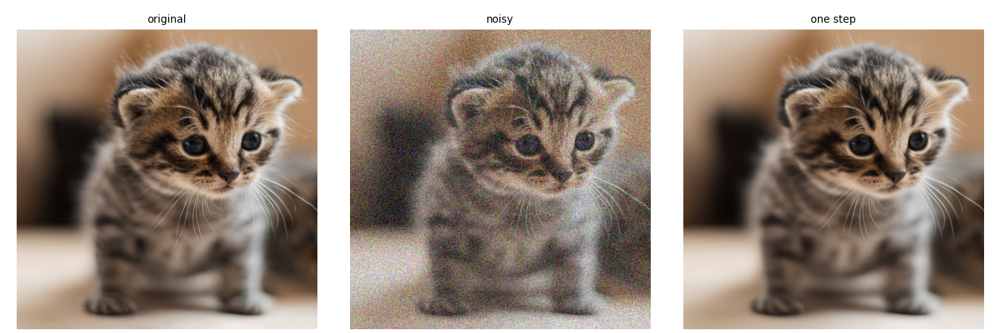
One step is already far better than blur, but it is soft at high noise. From \(t = 0.25\) the model cannot tell which fur pattern produced this noisy input, so it predicts the average direction, and one jump along that average lands on a smoothed kitten. At \(t = 0.75\) there is little ambiguity left and the estimate is almost indistinguishable from the original.
Because I kept the original image and noise, the exact update is known: \((1-t)(x_1 - \epsilon) = x_1 - x_t\). Below I compare it with the model's predicted update \((1-t)\hat v\). Both updates share one symmetric color scale (zero = middle gray). The heatmap is the per-pixel RMS difference across RGB, computed on raw values, with the same limits for all three times.
vt = predict_velocity(x_t, t, condition)
predicted_update = (1 - t) * vt
ground_truth_update = (1 - t) * (clean_image - epsilon)
error_map = (predicted_update - ground_truth_update).pow(2).mean(dim=1).sqrt() # (B, H, W)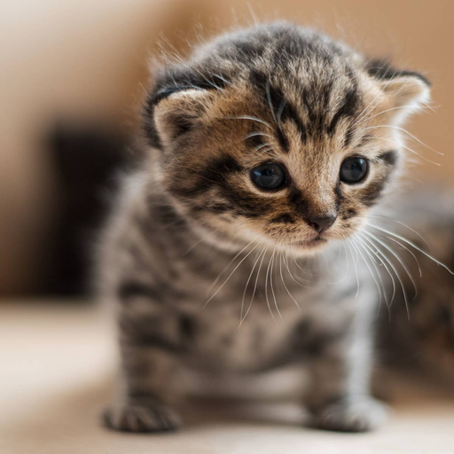
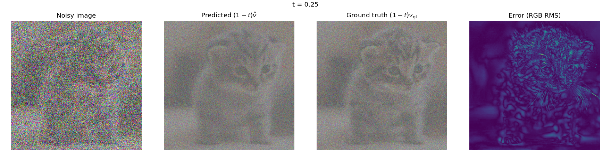
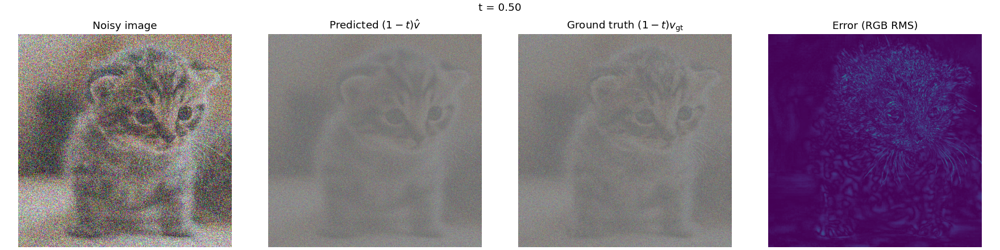
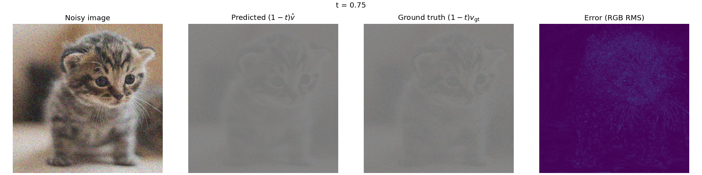
The ground-truth update contains the exact noise pattern to be removed, but the predicted update is smooth: nobody can recover the specific random values of \(\epsilon\) from \(x_t\), so the model predicts their expectation. The error is concentrated on high-frequency structure (fur stripes, whiskers, eyes), where many clean images are consistent with the input. It shrinks quickly as \(t\) increases, both because less information is missing and because the update is scaled by \(1 - t\).
Instead of one big jump, take a small step and ask the model again: \(x_{t+h} = x_t + h\, v_\theta(x_t, t, c)\). The velocity is recomputed at every step, and the final step is shortened when needed so the sampler lands exactly on \(t = 1\).
@torch.inference_mode()
def euler_sample(x_start, t_start, step_size, velocity):
states = [(t_start, x_start)]
while t_start < 1:
dt = min(step_size, 1 - t_start) # shorten the final step if needed
x_start = x_start + dt * velocity(x_start, t_start)
t_start = min(t_start + dt, 1)
states.append((t_start, x_start))
return x_start, statesI tested it with a constant velocity field, where Euler integration is exact: starting from \(t = 0\), \(0.5\), and \(0.93\) it takes 50, 25, and 4 steps (the last one shortened to 0.01), ends exactly at \(t = 1\), and returns \(x_{\text{start}} + (1 - t_{\text{start}})\). Then I denoised the saved \(t = 0.5\) kitten with 25 updates:
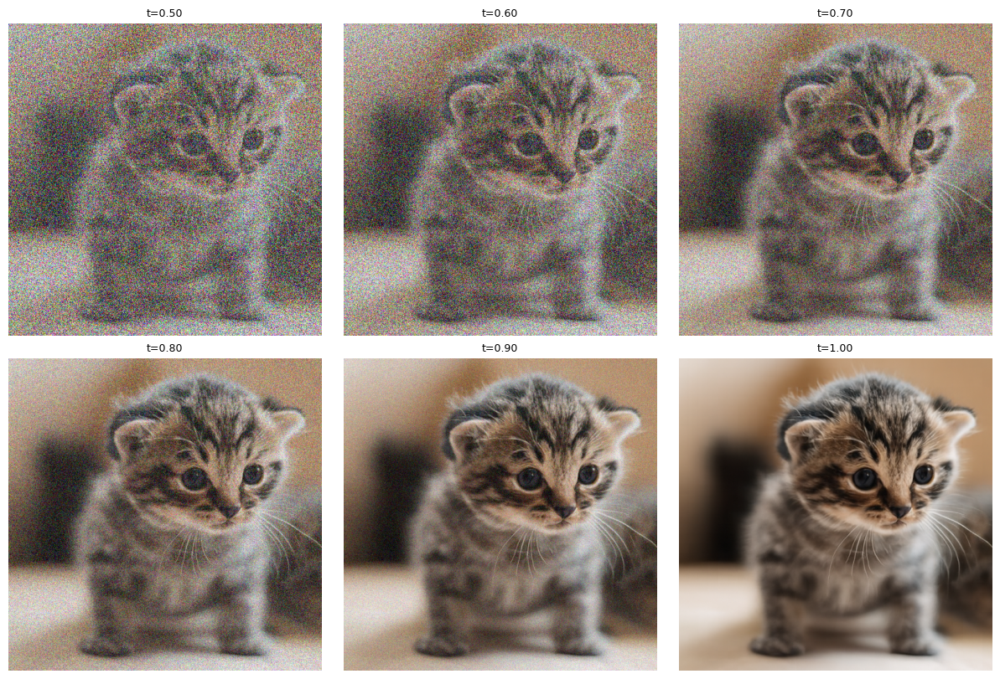
Same \(t = 0.5\) input, four methods:
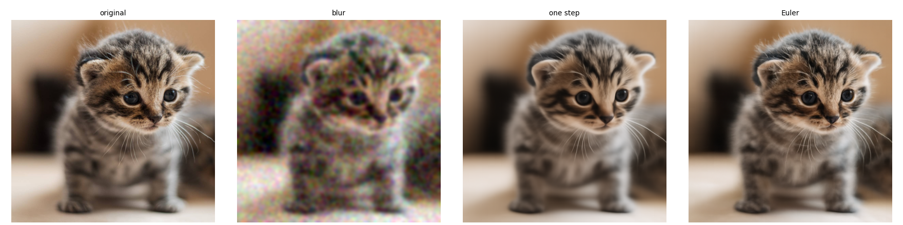
| Method (from t = 0.5) | MSE vs. original |
|---|---|
| Gaussian blur | 0.0120 |
| One-step | 0.0046 |
| Euler, 25 steps | 0.0057 |
Both model-based methods beat blur by a wide margin. Euler has slightly higher MSE than one-step even though it reaches a fully clean image, because the two optimize different things. The one-step estimate is close to the average of all plausible clean images, which is exactly what minimizes squared error. Euler re-queries the model as the image clears, so it commits to specific fur and whisker details. Those details are realistic but not identical to my photo, and every mismatch counts against MSE.
Setting \(t_{\text{start}} = 0\) and \(x_{\text{start}} \sim \mathcal N(0, I)\) turns the same sampler into a generator: 50 Euler steps with "a high quality photo" and no guidance. Seeds 180–184:
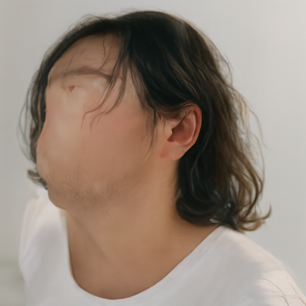
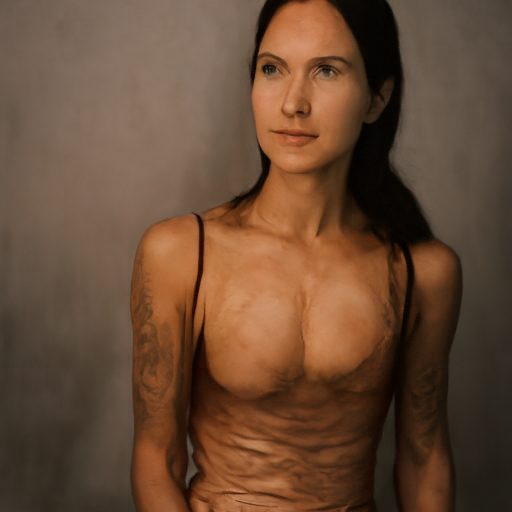
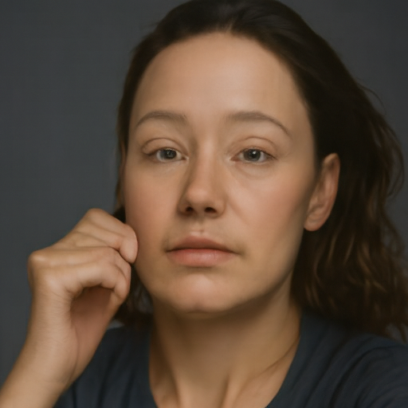
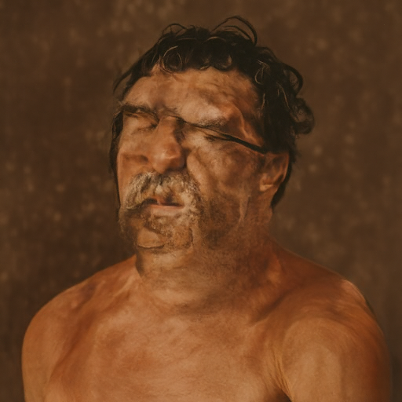
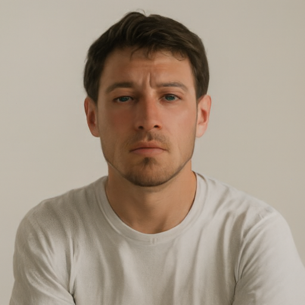
Every seed produced a portrait of a person, so the model strongly associates this generic prompt with portrait photography. Without guidance the quality is inconsistent: seed 180's face is missing, seed 183's face and skin are badly distorted, and seed 181 has an anatomically odd torso. Seeds 182 and 184 are plausible.
For each step, the model is evaluated twice at the same \(x_t\) and \(t\): once with the prompt (\(v_c\)) and once with the empty-string prompt (\(v_u\)). Following the notebook's convention, these are combined as
\[v_{\text{cfg}} = v_c + w\,(v_c - v_u),\]so \(w = 0\) is ordinary conditional sampling (checked: cfg_velocity(..., w=0) equals predict_velocity(...) exactly). I used \(w = 7\) and the same five initial noises as Section 1.6.
def cfg_velocity(x, t, condition, w, predict_velocity, null_condition=''):
vc = predict_velocity(x, t, condition)
vu = predict_velocity(x, t, null_condition)
return vc + w * (vc - vu)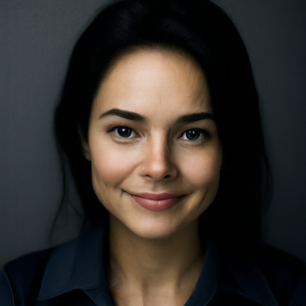
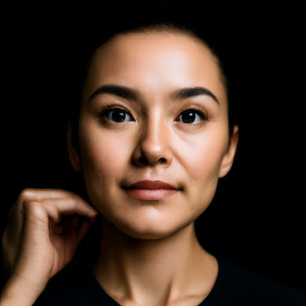
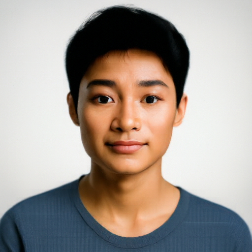
Guidance fixes every failure from Section 1.6: all five are clean, well-lit, anatomically correct studio portraits. Each seed keeps the rough layout of its unguided version (seed 182 still has the hand raised to the cheek). The cost is diversity: the guided images share the same centered, front-facing composition, dark or plain backgrounds, and high contrast, so they look much more alike than the unguided set did.
All results in this section use \(h = 0.02\), \(w = 7\), and the empty prompt for the unconditional branch.
To edit an image, I push it partway back toward noise and let the guided sampler bring it back onto the manifold of natural images. A smaller \(t_{\text{start}}\) adds more noise, so the model has to invent more.
def edit(image, noise, t_start, condition, predict_velocity, w=7, step_size=0.02):
noised_image = interpolate(image, noise, t_start)
guided_v = lambda x, t: cfg_velocity(x, t, condition, w, predict_velocity, null_condition)
x_1, _ = euler_sample(noised_image, t_start, step_size, guided_v)
return x_1Prompt: "a high quality photo". Starting times run from most noise (left) to least.
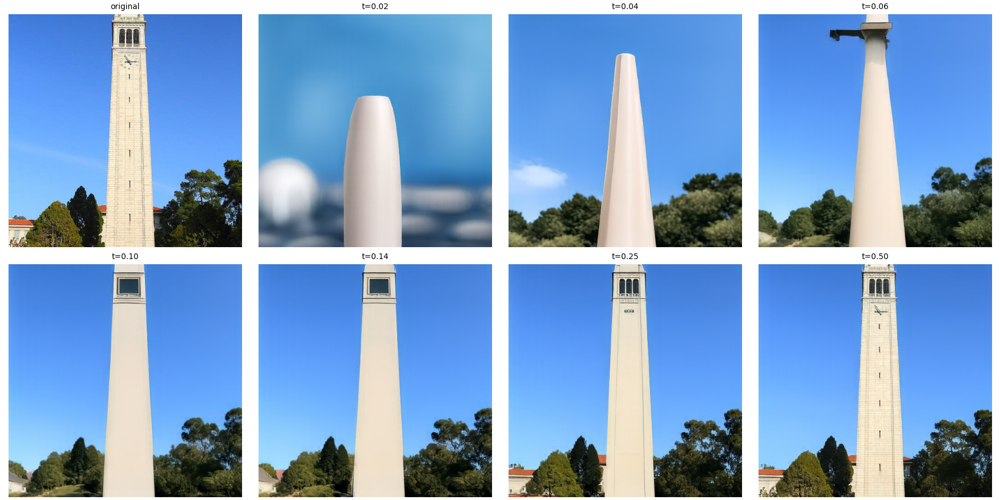
At \(t_{\text{start}} = 0.02\) only a pale vertical shape against blue survives, and the model turns it into a rounded white object. From 0.04 to 0.14 it becomes a plain white obelisk among trees, gaining a window at the top. The belfry arches return at 0.25, and the clock face and stone texture return at 0.50.
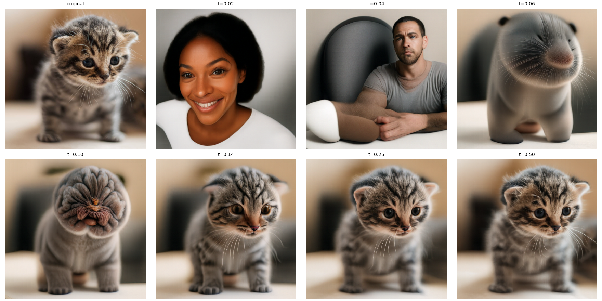
The lowest starting times keep only the overall color and the bright center, which the model reads as portraits of people. At 0.06–0.10 a gray, furry animal appears but with the wrong face. A kitten appears at 0.14 with different markings, and by 0.25 the result is close to my photo.
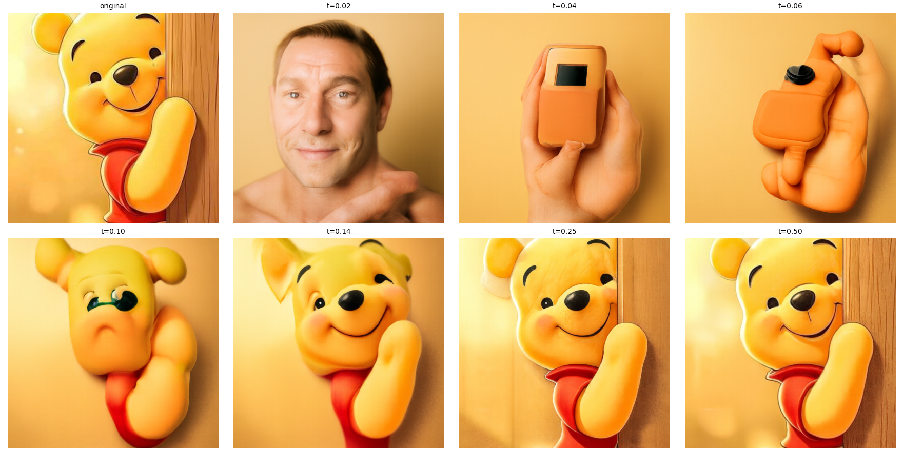
The warm yellow palette survives even at 0.02, where the model generates a man's portrait in matching light. At 0.04–0.06 the red-and-yellow blob becomes an orange object held in a hand. The cartoon bear reappears at 0.10 as a clay-like 3D version, and the original illustration style is back by 0.25.
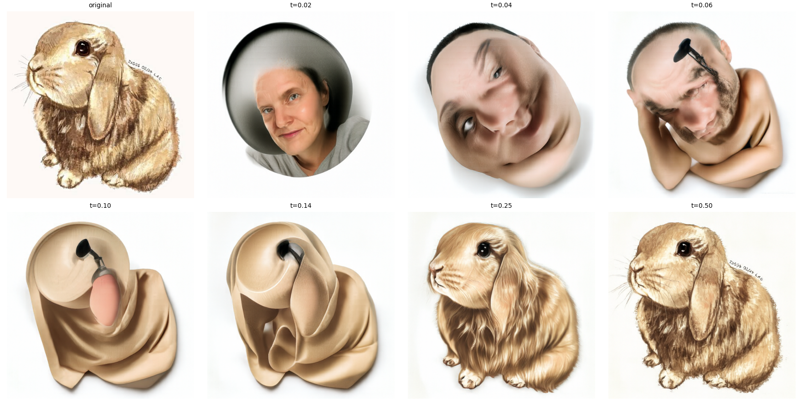
A pencil sketch of a rabbit from the web. The round, light composition reads as a vignetted portrait at 0.02–0.06, and as draped beige fabric at 0.10–0.14. At 0.25 the rabbit returns as a much more realistic, painterly animal, a nice example of a sketch being projected toward photographs; at 0.50 it stays close to the sketch.
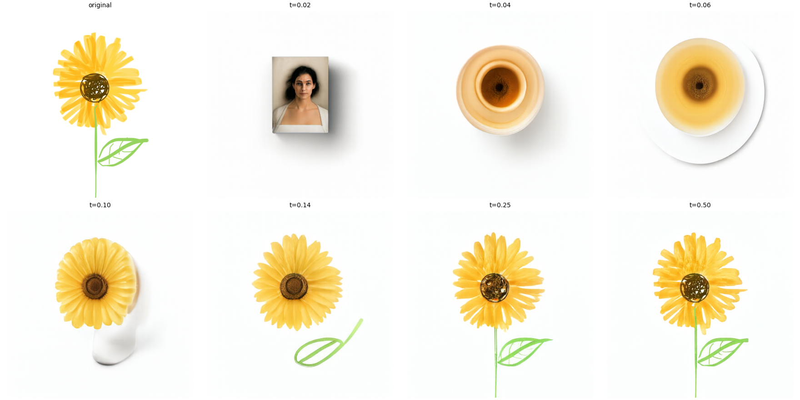
A flat drawing on a white background gives the model very little to hold on to. At 0.02 it produces a small framed photo, and at 0.04–0.06 the round yellow head with a dark center becomes a cup of coffee seen from above. At 0.10–0.14 the sketch becomes a photorealistic yellow daisy, which is the most convincing "drawing to photo" result. By 0.25 the hand-drawn strokes return.
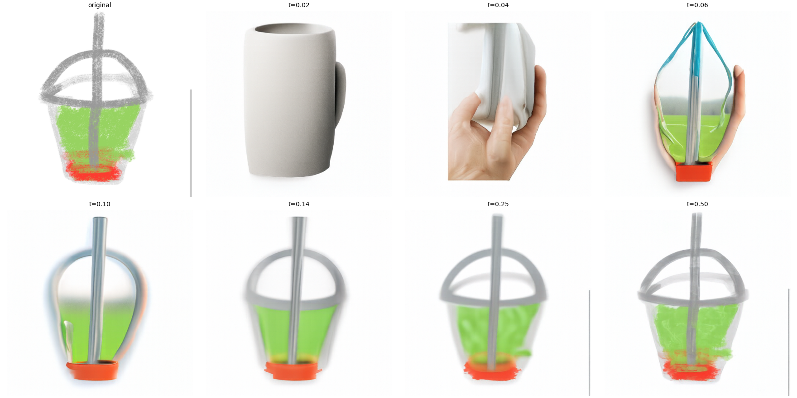
The gray dome and straw first become a white ceramic mug (0.02), then a hand holding a white object. At 0.06–0.10 the green fill and orange base come back as a realistic plastic cup with a metal straw. From 0.14 on, the result follows the crayon drawing.
Same procedure and starting times, but with a prompt describing the edit instead of the generic photo prompt. Lower starting times give the prompt more control; higher ones preserve more of the input.
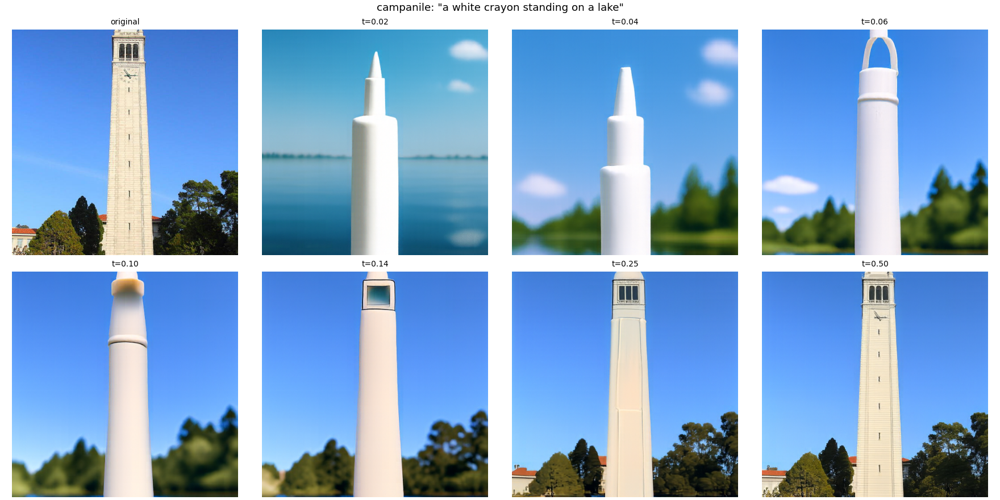
At 0.02–0.06 the prompt wins: a white crayon-like column with a pointed tip rises out of a lake, with the trees reflected around it. At 0.10–0.14 the result is a hybrid, a smooth crayon-shaped shaft with the Campanile's window and proportions. From 0.25 the tower wins and the edit disappears.
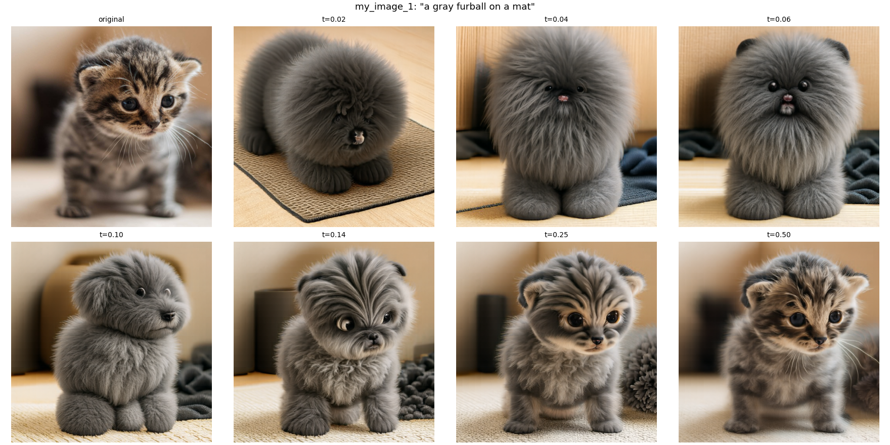
The low starting times produce a fluffy gray animal sitting on a woven mat. At 0.10–0.14 the furball takes on the kitten's pose and ears, and at 0.25 the kitten is back but with grayer, fluffier fur than the original, which shows the prompt still has a small effect.
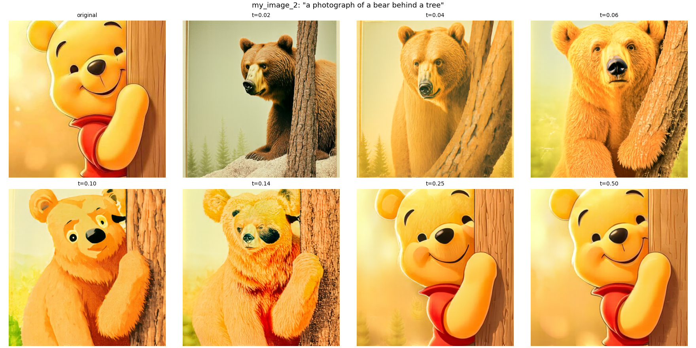
At 0.02 the edit is a real brown bear peeking around a tree trunk. At 0.04–0.06 the bear keeps the cartoon's golden color and the tree on the right. At 0.10–0.14 the result is a stylized bear in the cartoon's exact pose. From 0.25 the original cartoon dominates.
At every Euler step, I predict a guided velocity for prompt A on the upright image, and a guided velocity for prompt B on the image rotated 180°, rotate that prediction back, and average the two. The final image has to satisfy both prompts at once, one in each orientation.
\[v = \tfrac12\Big[v_{\text{cfg}}(x_t, t, p_1) + F\big(v_{\text{cfg}}(F(x_t), t, p_2)\big)\Big]\]def visual_anagrams(noise, condition_a, condition_b, predict_velocity, w=7, step_size=0.02):
def anagram_v(x, t):
v1 = cfg_velocity(x, t, condition_a, w, predict_velocity)
v2 = rotate180(cfg_velocity(rotate180(x), t, condition_b, w, predict_velocity))
return (v1 + v2) / 2
x_final, _ = euler_sample(noise, 0, step_size, anagram_v)
return x_final\(F\) is torch.flip(x, (-2, -1)), a true 180° rotation (both spatial axes), and \(F(F(x)) = x\) checks out.
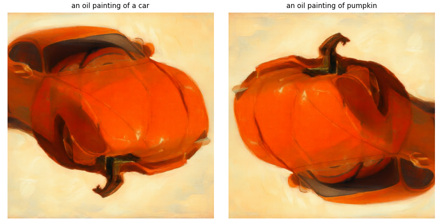
Rotated, the image is clearly a pumpkin with its stem on top. Upright, the same orange mass reads as a rounded car body with dark wheel arches, although the car is the weaker of the two readings.
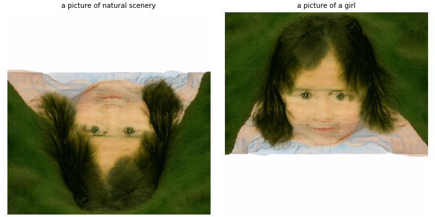
This one works in both directions. Upright it is a green valley with trees and a desert mesa in the distance; rotated, the two clumps of trees become the girl's hair, and the valley floor becomes her face.
Following Factorized Diffusion, each Euler step combines the low frequencies of one guided prediction with the high frequencies of the other. The low-pass filter is a Gaussian blur with kernel size 265 and \(\sigma = 16\); the high-pass is the prediction minus its low-pass.
\[v = f_{\text{lowpass}}\big(v_{\text{cfg}}(x_t, t, p_1)\big) + f_{\text{highpass}}\big(v_{\text{cfg}}(x_t, t, p_2)\big)\]def make_hybrids(noise, condition_a, condition_b, predict_velocity, w=7, step_size=0.02):
def hybrid_v(x, t):
v1 = cfg_velocity(x, t, condition_a, w, predict_velocity)
v2 = cfg_velocity(x, t, condition_b, w, predict_velocity)
return lowpass(v1) + v2 - lowpass(v2)
x_final, _ = euler_sample(noise, 0, step_size, hybrid_v)
return x_finalUp close you see the high-frequency prompt; shrunk to 64×64 (or viewed from far away), only the low-frequency structure remains.
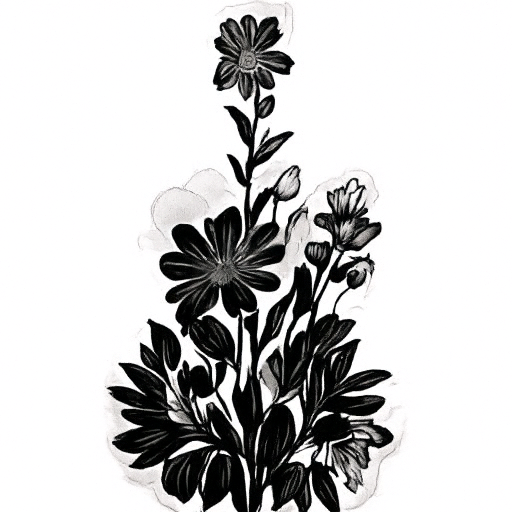
Up close this is a black-ink bouquet. The guitar comes through in the silhouette: a long thin stem at the top acts as the neck, and the wide dark mass of leaves at the bottom acts as the body.
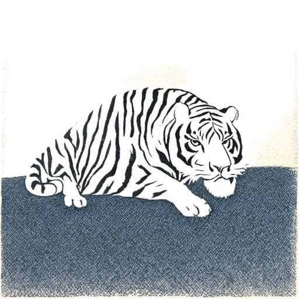
Up close, a striped tiger lies on a blue textured ground. The mountain prompt shows up only weakly: at small size, the pale upper half and the dark band below read as a horizon line rather than a peak, so the tiger still dominates. This pair is the less successful of the two.
Part B results will be added here.